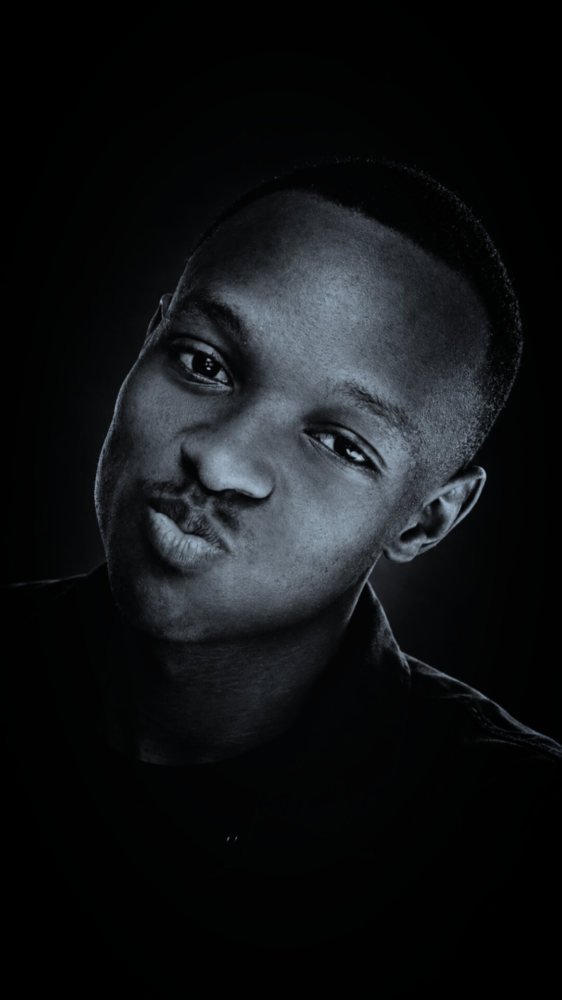

</>
Frontend
Building responsive, accessible interfaces.
SOFTWARE DEVELOPER | SOCIAL MEDIA SPECIALIST | TANZANIA
I'm Shadeus Marwa Matinde — a software developer and social media specialist passionate about building useful digital products, managing social media platforms, and creating engaging digital content that helps organizations strengthen their online presence.

01 / ABOUT ME
Technology is most exciting to me when it solves a problem someone actually has.
I have hands-on experience in social media account management, digital content creation, platform management, and online brand communication. My work involves managing organizational social media accounts, developing and publishing content, maintaining a consistent digital presence, and communicating information effectively to online audiences.
Combined with my technical background in software development, IT infrastructure, network troubleshooting, and Management Information Systems (MIS), I can support both an organization's digital operations and its online presence. I approach each task analytically, using technical problem-solving, creative content development, and continuous improvement to deliver effective digital solutions.
I'm growing my craft through hands-on projects — with a long-term goal of creating useful products for businesses, schools, and communities across East Africa.
Have a problem to solve?I start with the need, not just the technology.
Every project is a chance to improve my skills.
Useful, understandable, maintainable solutions.
02 / TOOLKIT
A growing toolkit for designing, building, and improving web-based systems.
Building responsive, accessible interfaces.
Learning how applications process and store information.
Organising code and iterating through real projects.
Structuring data, writing queries, and managing database operations using SQL and NoSQL technologies.
This toolkit reflects my current learning and project experience; I'm continuously expanding it.
04 / CREATIVE WORK
A showcase of my photo editing, video editing, and digital content work created for communication and social media.
SELECTED VISUALS
Explore my creative work. Swipe on mobile, use the navigation arrows, or select a dot to move between projects.
Tip: replace the sample image paths with your own images. You can add or remove slides to match the work you want to showcase.
CREATIVE PROCESS
My creative work focuses on enhancing images, editing video footage, arranging visual elements, and preparing engaging content for social media and digital communication. I aim to combine visual creativity with clear messaging to help organizations present their activities, services, and ideas effectively to online audiences.
Discuss an opportunityHelping organizations communicate clearly through digital platforms.
Presenting information in ways that are relevant to the intended audience.
Bringing software and IT knowledge into digital communication work.
05 / SELECTED WORK
A selection of practical product ideas and prototypes. Project details can be updated as each one develops.
A digital workspace concept for organising student records, admissions, fees, and day-to-day school operations.
A management and inventory tracking workflow connecting customers and supermarket staff across purchasing, sales, inventory, reporting, and collection.
A phone-first retail tool concept for tracking products, stock levels, and sales in small shops.
ShadeTech is a technology initiative focused on helping businesses and organizations improve their operations through modern websites and customized software systems. It was my first project.
These summaries describe project concepts, prototypes, and projects that are currently in development.
06 / CONTACT
Have an idea, a project, or a real problem that could use a software solution or digital communication support? I'd like to hear about it.
Email me
Need help taking your business digital? From websites and custom
software to digital communication, let's find the right solution for you.
Contact me
+255 754 402 371
Checking Supabase connection...
03 / SOCIAL MEDIA
Connecting brands
with their audience.
I combine digital communication, content development, and technology to help organizations strengthen their online presence and communicate effectively with their audiences.
Social Media Management
Managing social media accounts, maintaining an active online presence, and helping organizations communicate effectively with their audiences.
Digital Content Creation
Developing relevant digital content that communicates an organization's message, showcases its activities, and engages its target audience.
Digital Promotion
Supporting digital promotional activities and helping organizations present their services, activities, and achievements online.
Technology & Communication
Applying IT knowledge to support online platforms, digital workflows, and an organization's overall digital presence.